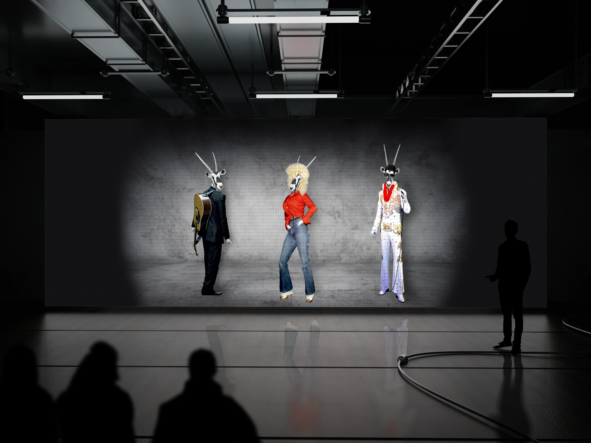
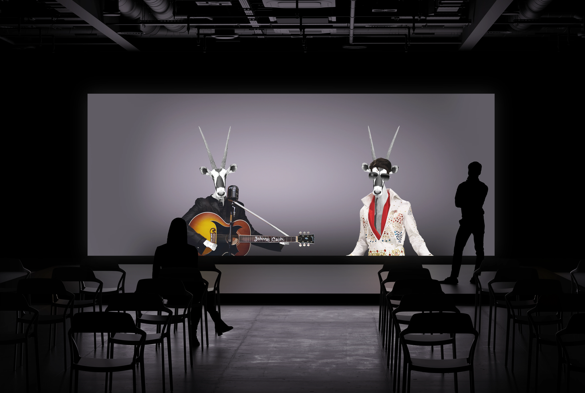
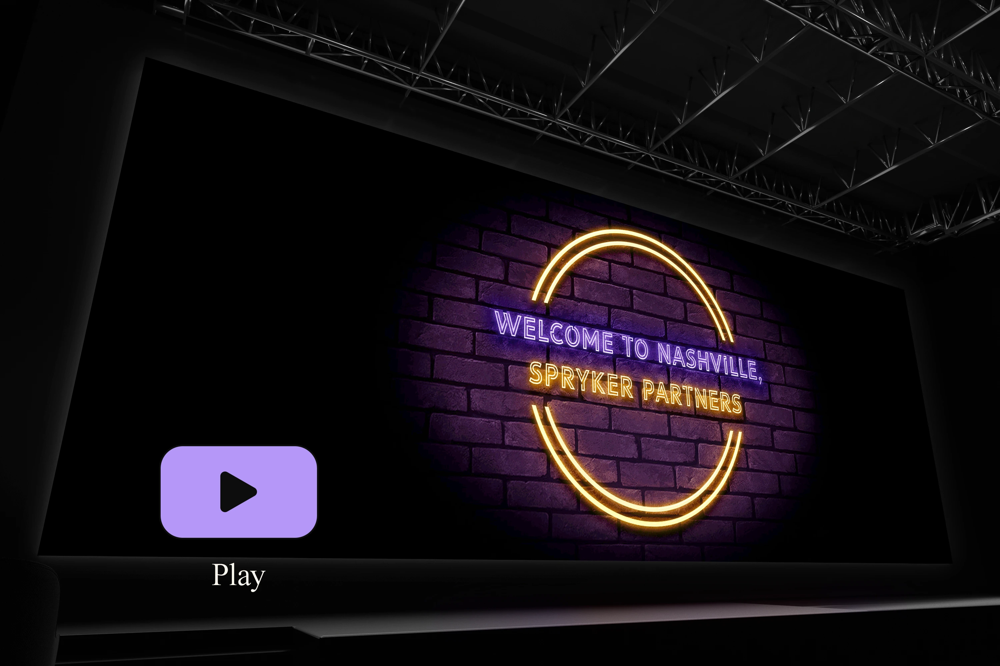

INTRO
For the EXCITE event in Nashville, Spryker Systems required the creation of promotional graphics that would reflect the country music theme and make the event memorable for new partners. The visuals included various versions of the company’s mascot, Oskar, styled to represent iconic figures such as Elvis Presley, Johnny Cash, and Dolly Parton. These graphics were used for presentations, social media, and life-size totems. Additionally, animated GIFs were developed for stage backdrops, emulating the neon sign style typical of Nashville venues to create an engaging and characteristic atmosphere for the event.
For the EXCITE event in Nashville, Spryker Systems required the creation of promotional graphics that would reflect the country music theme and make the event memorable for new partners. The visuals included various versions of the company’s mascot, Oskar, styled to represent iconic figures such as Elvis Presley, Johnny Cash, and Dolly Parton. These graphics were used for presentations, social media, and life-size totems. Additionally, animated GIFs were developed for stage backdrops, emulating the neon sign style typical of Nashville venues to create an engaging and characteristic atmosphere for the event.

THE CHALLENGE
The main challenges involved adapting the company’s mascot to different styles without compromising visual consistency. Creating versions of Oskar in iconic poses and outfits was particularly complex, as it required manipulating images of famous singers and adapting them to the character’s structure, despite the limited availability of optimal photographic resources.
The main challenges involved adapting the company’s mascot to different styles without compromising visual consistency. Creating versions of Oskar in iconic poses and outfits was particularly complex, as it required manipulating images of famous singers and adapting them to the character’s structure, despite the limited availability of optimal photographic resources.

THE SOLUTION
To create impactful graphics, a series of mascot versions were designed, each crafted to convey the essence of the characters being represented. Creative solutions were necessary, such as using images of Halloween costumes, photos from wax museums, and even promotional shots from films to achieve realistic results. The integration of iconic elements like costumes and accessories was managed with a high level of quality, respecting the clichés associated with the country theme. Alongside static images, large animated GIFs were created to replicate the look of Nashville’s neon signs, featuring personalised messages for event guests. This combination of static and animated elements resulted in a varied and engaging visual experience.
To create impactful graphics, a series of mascot versions were designed, each crafted to convey the essence of the characters being represented. Creative solutions were necessary, such as using images of Halloween costumes, photos from wax museums, and even promotional shots from films to achieve realistic results. The integration of iconic elements like costumes and accessories was managed with a high level of quality, respecting the clichés associated with the country theme. Alongside static images, large animated GIFs were created to replicate the look of Nashville’s neon signs, featuring personalised messages for event guests. This combination of static and animated elements resulted in a varied and engaging visual experience.

RESULT
The created visuals enhanced the event experience by immersing participants in the country theme and making the mascot a central element of engagement. The variety of visual outputs received positive feedback from the marketing team, who appreciated the ability to translate the brand’s identity into diverse visual contexts without losing consistency. During the event, employees shared videos and images on social media of participants posing with the totems and interacting with the graphics, demonstrating the project’s effectiveness in creating an engaging and memorable atmosphere.
The created visuals enhanced the event experience by immersing participants in the country theme and making the mascot a central element of engagement. The variety of visual outputs received positive feedback from the marketing team, who appreciated the ability to translate the brand’s identity into diverse visual contexts without losing consistency. During the event, employees shared videos and images on social media of participants posing with the totems and interacting with the graphics, demonstrating the project’s effectiveness in creating an engaging and memorable atmosphere.